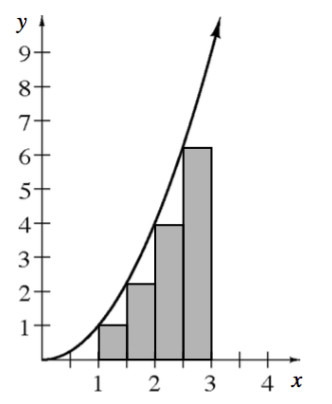
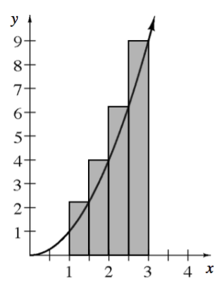
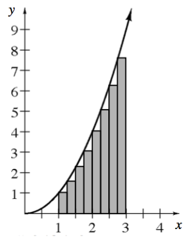
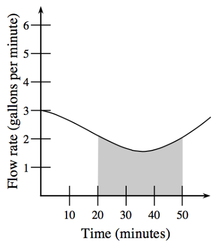

The graph of \(f(x)=x^2\) for \(x\ge0\) is shown shown. Notice that the interval, \(1\le x\le3\), is divided into four equal sub-intervals.
Carefully copy the graph onto graph paper. Use the equation \(f(x)=x^2\) to obtain the coordinates of the points where the rectangles touch the curve. Label the points on your graph.
In terms of the rectangles drawn, what does the y-value of each coordinate represent?
What is the width of each rectangle?
Subscript notation will be used to help describe the locations of the rectangles on the interval. Refer to the Math Notes box in Lesson 3.2.1 if you are unfamiliar with this notation. Label \(x_0\), \(x_1\), \(x_2\), \(x_3\), and \(x_4\) under each of the corresponding \(x\)-values on the graph
The four shaded rectangles in the diagram are called left endpoint rectangles. Why are they called left endpoint rectangles?
Approximate the area under the curve by writing and evaluating a sum for the total area of the shaded rectangles. Is this sum greater than or less than the actual area under the curve?

Now, take another look at the same situation with a similar, but slightly different approach. The graph of \(f(x)=x^2\) for \(x\ge0\) is shown again shown, but this time the rectangles on the interval \(1\le x\le3\) are different.
Carefully copy this graph onto graph paper near your graph from the previous problem. Label the coordinates of the points where the rectangles touch the curve.
In terms of the rectangles drawn, what does the \(y\)-value of each coordinate represent?
Label \(x_0\), \(x_1\), \(x_2\), \(x_3\), and \(x_4\) under each of the corresponding \(x\)-values on the graph.
The rectangles drawn are called right endpoint rectangles. Why are they called right endpoint rectangles?
Approximate the area under the curve by writing and evaluating a sum for the total area of the shaded rectangles. Is this sum greater than or less than the actual area under the curve?

In the previous two problems you approximated \(A(x^2,1\le x\le3)\), the area under the curve of \(f(x)=x^2\) on the interval \(1\le x\le3\). The left endpoint approximation of \(6.75\text{ un}^2\) is an underestimate of the actual area under the curveand the right endpoint approximation of \(10.75\text{ un}^2\) is an overestimate of the actual area under the curve. How can the shape of a curve determine if a rectangular approximation will produce an underestimate or an overestimate?
Is the graph of \(f(x)=x^2\) increasing or decreasing for \(1\le x\le3\)?
Which type of rectangles produced the underestimate of the actual area under the curve? Why?
Sketch an example of a curve where the right endpoint rectangles will produce an underestimate of the area under a curve. Is your curve increasing or decreasing?
The approximations \(6.75\text{ un}^2\) and \(10.75\text{ un}^2\), from problems 3-114 and 3-115, are not close to one another. In your team, discuss what you can do to make the approximations closer together and record your ideas.
A LITTLE BIT CLOSER NOW
The graph of \(f(x)=x^2\) for \(x\ge0\) is shown shown. This time on the interval \(1\le x\le3\) the width of each rectangle has been made smaller.
What is the width of each rectangle?
What is the height of each rectangle?
How are the heights generated from the function?
Approximate \(A(f,1\le x\le3)\). How does this answer compare to the approximations from problems 3-114 and 3-115?

How can sigma notation be used to express the sums you computed to approximate the area under the curve? Look back to the graph of \(f(x)=x^2\) for \(1\le x\le3\) from problem 3-114 and complete the parts shown to develop this notation.
Make sure you have the subscript values \(x_0\), \(x_1\), \(x_2\), \(x_3\), and \(x_4\) written under each corresponding \(x\)-value on the graph. Write a linear equation for \(x_k\). Remember that when \(k=0\) then \(x_0=1\), and when \(k=4\) then \(x_4=3\).
Write an expression for the heights of the left endpoint rectangles in terms of \(k\).
What is the width of each rectangle?
The area of a rectangle is calculated by computing \(A=\text{(height)(width)}\). Use your expressions from parts (b) and (c) to write an equation for the area of a left endpoint rectangles in terms of \(k\).
Now, use sigma notation and your equation in part (d) to write an expression that can be used to calculate the sum of the areas of the four left endpoint rectangles from problem 3-114. Remember that for left endpoint rectangles, start with \(k=0\).
Let \(y=\frac{2}{x}\).
Divide the interval \(4\le x\le6\) into five equal pieces. What is the width of each piece?
List the values of \(x_0\), \(x_1\), \(x_2\), \(x_3\), \(x_4\), and \(x_5\).
Use five rectangles to produce an underestimate for the area under the curve.
Next, use five rectangles to produce an overestimate for the area under the curve.
What change can you make so that the underestimate and overestimate are closer together?
Write the following expression using summation notation.
\(0.25(3)^2+0.25(3.25)^2+0.25(3.5)^2+\ ...\ +0.25(5.5)^2+0.25(5.75)^2\)
The graph shown shows the rate of water flowing through a pipe.
What does the shaded region represent in terms of the pipe? Be specific and include the interval.
Approximate the area using the correct units.

Solve the following system of equations:
\(\begin{array}{c} 3x-2y=-6 \\ xy=12 \end{array}\)
Solve each equation.
\(2^x=8^{(x-1)}\)
\(4^{-x}=8^{(x+2)}\)
\(7^{(x+3)}=1\)
If \(\sin(\theta)=\frac{5}{13}\) and \(\frac{\pi}{2}\leθ\le\pi\), sketch a triangle to match this situation and then evaluate \(\cos(θ)\) and \(\tan(θ)\).
A rodent got into Barndale’s Department Store and chewed right through one of the store displays. Sidney and her manager Eloise need to work together to build a new display. When Sidney works alone she can build the display in \(7\) hours. When Eloise works alone it takes her \(5\) hours. How much time will it take to build the new display if Eloise and Sidney work together?
Sketch a graph of each the following functions. Include at least two cycles.
\(y=2\sin(x)-1\)
\(y = - \operatorname { sin } ( x - \frac { \pi } { 4 } ) + 2\)